|
Funcionamiento de código
AdministradorM.java
Clase AdministradorM
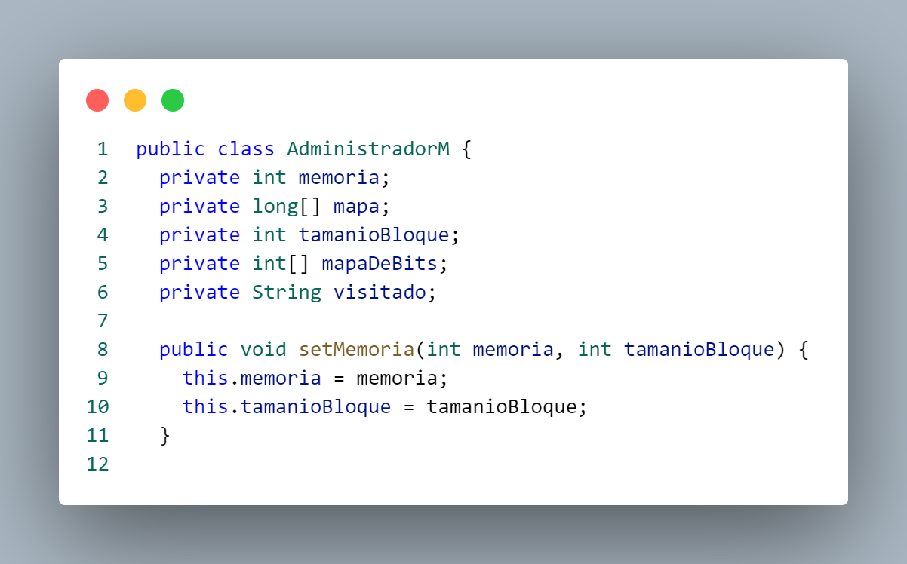
Este método proporciona
una manera de establecer los valores
de la memoria y el tamaño del bloque
para un objeto de la clase AdministradorM.
Al llamar a este método, puedes cambiar
la configuración de la instancia de la
clase sin acceder directamente a sus
atributos.
El metodo 'setMemoria' proporciona una
forma de actualizar dos propiedades de
la instancia de la clase AdministradorM
(memoria y tamanioBloque) con valores
específicos proporcionados como argumentos
al llamar al método.
Metodo Inicializar Memoria
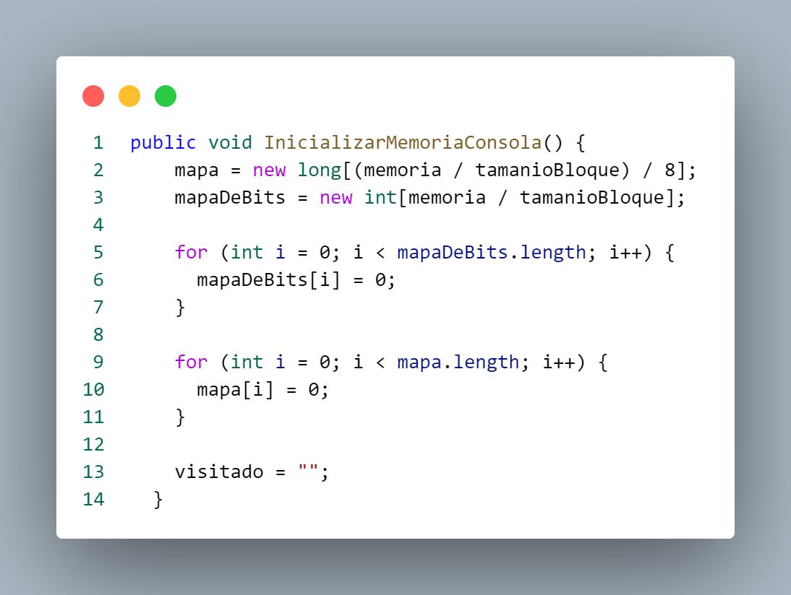
Este metodo se encarga de
inicializar algunos de los atributos de
la instancia de esa clase, creando un
array de tipo long llamado 'mapa'
con un tamaño calculado en base a la memoria
y el tamaño del bloque, asi como un array
de tipo int llamado 'mapaDeBits' con un tamaño
calculado en base a la memoria y el tamaño
del bloque.Inicializa todos los elementos
del array 'mapaDeBits' a 0, todos los elementos
del array 'mapa' a 0 e inicializa la cadena
'visitado' como una cadena vacía.
En conjunto, este método establece la estructura
inicial de algunos de los atributos de la instancia
de la clase AdministradorM, preparándola para su
uso posterior en el programa.
Metodo Primer Ajuste
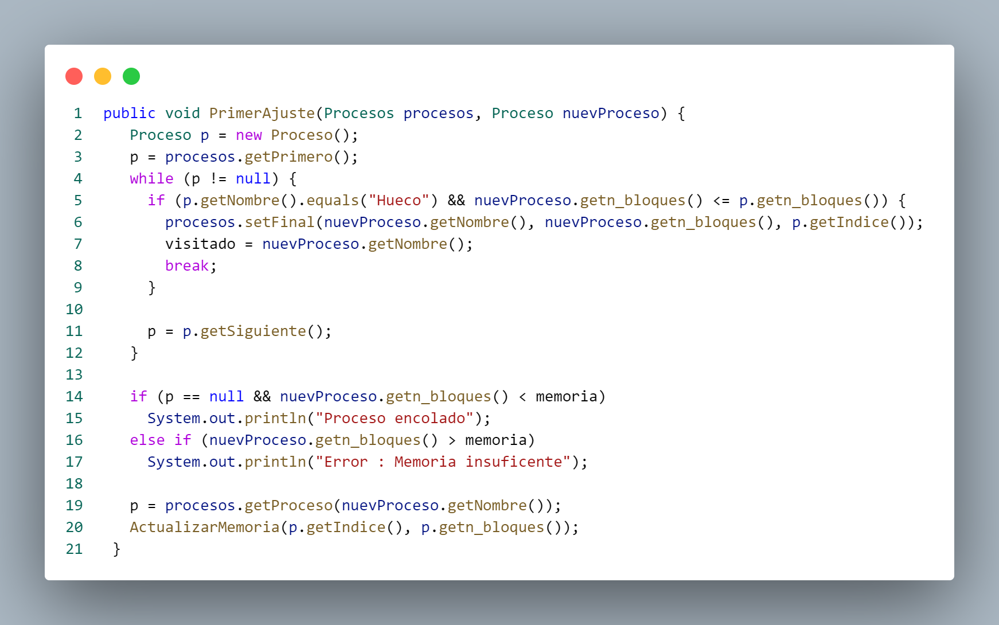
Este método intenta asignar memoria
al nuevo proceso utilizando el algoritmo de 'Primer Ajuste'.
Busca el primer hueco lo suficientemente grande para
acomodar el nuevo proceso en la lista de procesos.
Si encuentra un hueco, actualiza la información del
proceso en la lista de procesos y la variable de instancia "visitado".
Si no encuentra un hueco adecuado, imprime un mensaje
indicando si el proceso fue encolado o si hay un error
de memoria insuficiente.
Finalmente, actualiza la memoria con la información
del nuevo proceso mediante el método ActualizarMemoria.
Metodo Siguiente Ajuste
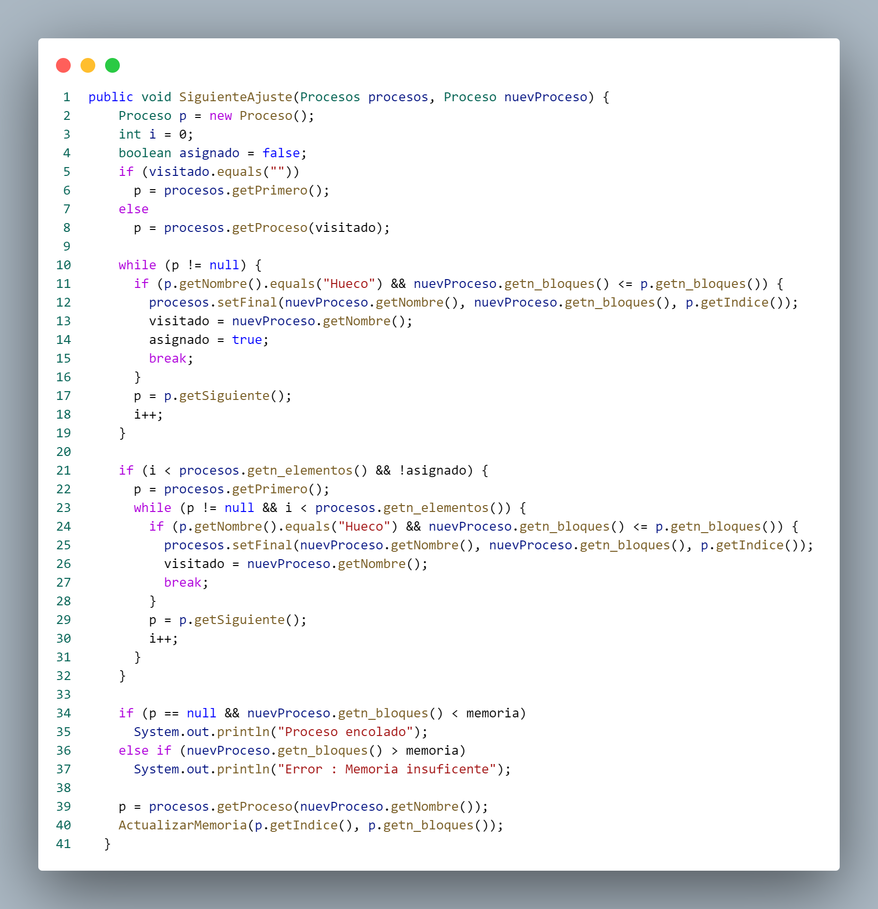
Este método intenta asignar memoria al
nuevo proceso utilizando el algoritmo de 'Siguiente Ajuste'.
Comienza la búsqueda desde el proceso marcado por
'visitado' (o desde el principio si "visitado" está vacío)
y continúa la búsqueda en la lista de procesos. Si encuentra
un hueco adecuado, asigna memoria al nuevo proceso
y actualiza la variable de instancia "visitado". Si no
encuentra un hueco adecuado, imprime un mensaje indicando
si el proceso fue encolado o si hay un error de memoria
insuficiente. Finalmente, actualiza la memoria con la
información del nuevo proceso mediante el método ActualizarMemoria.
Metodo Mejor Ajuste
Este método intenta asignar
memoria al nuevo proceso utilizando el
algoritmo de 'Mejor Ajuste'. Busca el hueco
más pequeño que sea suficientemente grande
para acomodar el nuevo proceso y lo asigna
si encuentra uno adecuado. Si no encuentra
un hueco adecuado, imprime un mensaje indicando
si el proceso fue encolado o si hay un error
de memoria insuficiente. Finalmente, actualiza
la memoria con la información del nuevo proceso
mediante el método ActualizarMemoria.
Metodo Peor Ajuste
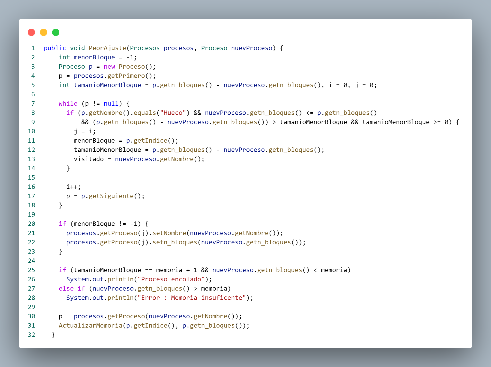
Este método intenta asignar memoria
al nuevo proceso utilizando el algoritmo de 'Peor Ajuste'.
Busca el hueco más grande que sea suficientemente
grande para acomodar el nuevo proceso y lo asigna si
encuentra uno adecuado. Si no encuentra un hueco adecuado,
imprime un mensaje indicando si el proceso fue encolado o
si hay un error de memoria insuficiente. Finalmente, actualiza
la memoria con la información del nuevo proceso mediante el
método ActualizarMemoria.
Metodo Huecos
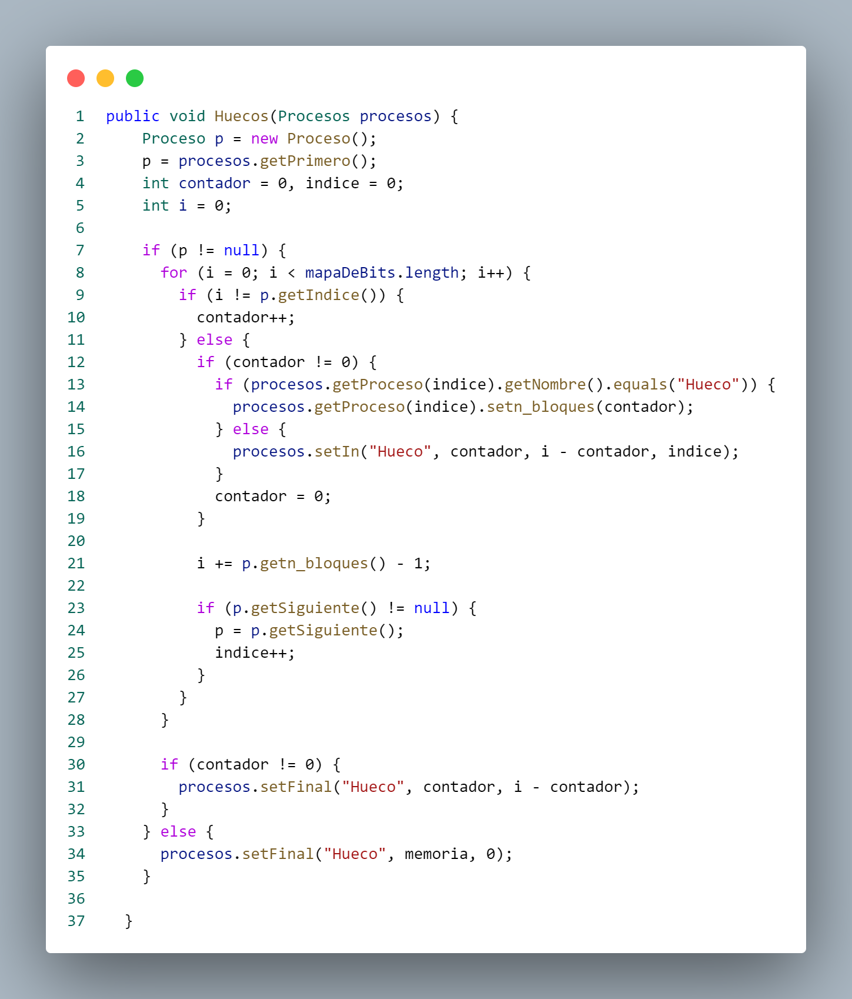
Este método parece
recorrer el mapa de bits de la
memoria y actualizar la información
en la lista de procesos (procesos)
para reflejar los huecos disponibles
en la memoria. Si la lista de procesos
contiene procesos, se identifican
los huecos entre ellos y se actualizan
en la lista. Si la lista de procesos
está vacía, se asume que toda la memoria
está disponible como un único hueco.
Es una forma de mantener actualizada
los huecos en la memoria según la
información contenida en la lista
de procesos.
Metodo Actualizar Memoria
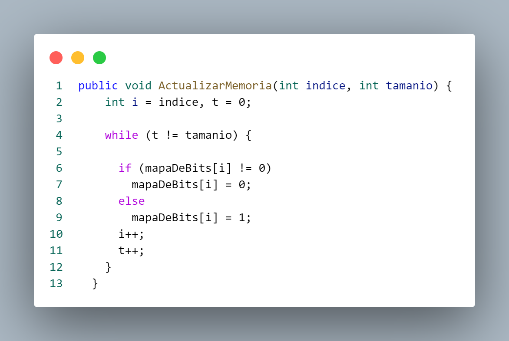
Este método cambia los
valores en el mapa de bits a partir
de una posición dada (indice) y
actualiza un número específico de
bloques (tamanio). Si un bloque
estaba ocupado, lo marca como libre (0),
y si estaba libre, lo marca como ocupado (1).
Este tipo de actualización es común en
sistemas operativos y administración
de memoria para reflejar los cambios
en la ocupación de bloques de memoria.
Metodo Mostrar Memoria
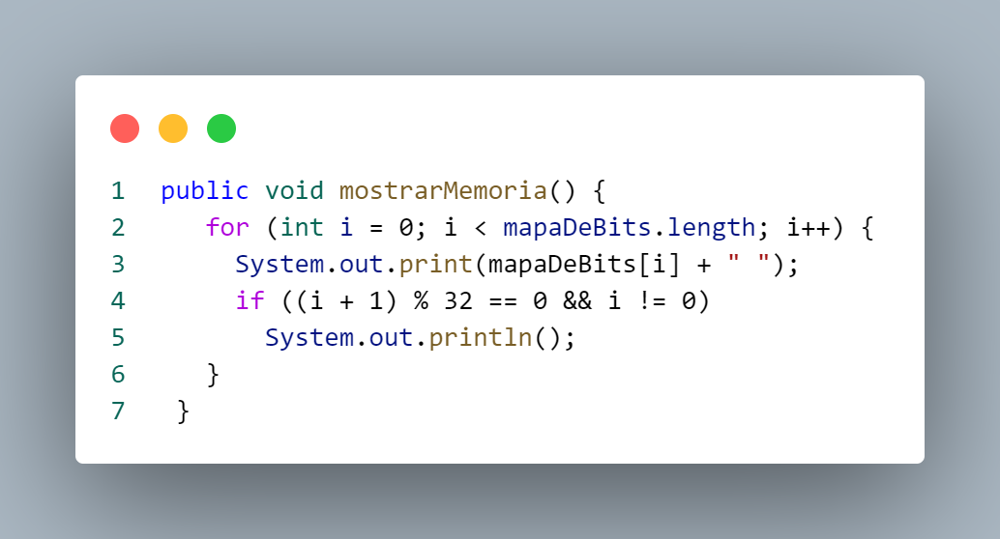
Este método muestra en
la consola el contenido del array
mapaDeBits de manera que cada valor
del mapa se imprime seguido de un
espacio. Además, cada vez que se
ha impreso un bloque de 32 bits,
se inserta un salto de línea para
mejorar la legibilidad de la salida
en la consola. Este tipo de representación
es común en sistemas operativos para
visualizar el estado de la memoria
a través de su mapa de bits, donde
cada bit puede representar la ocupación (1)
o liberación (0) de un bloque de memoria.
Metodo setMapa
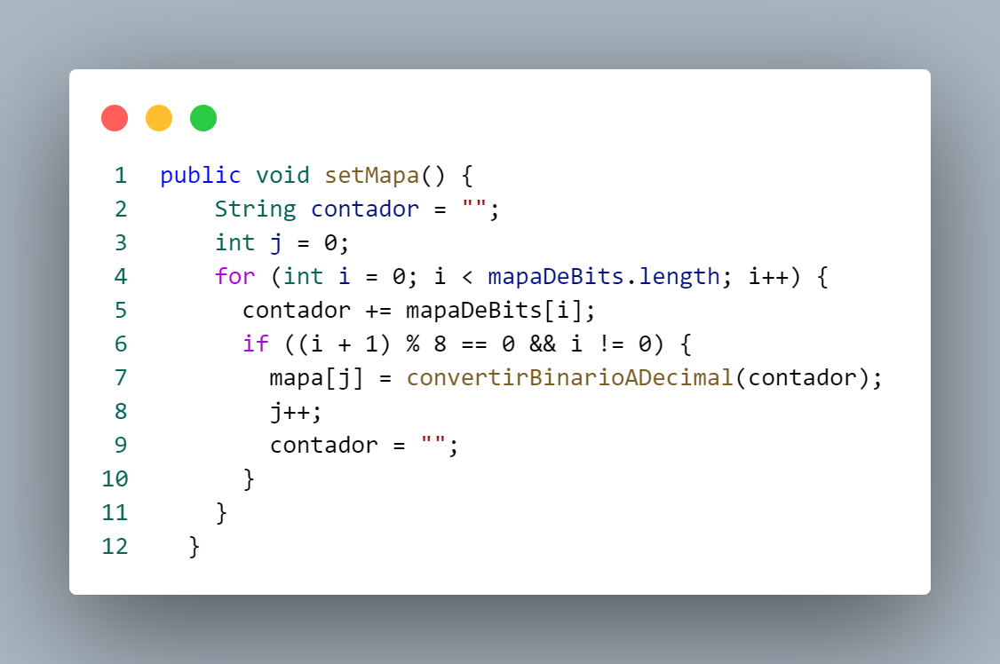
En este método la función
convertirBinarioADecimal toma una cadena
binaria como entrada y devuelve su equivalente
en decimal. Entonces, el método setMapa
procesa el array mapaDeBits, toma cada
bloque de 8 bits y lo convierte en su valor
decimal correspondiente, almacenando los
resultados en el array mapa.
Metodo verMapa
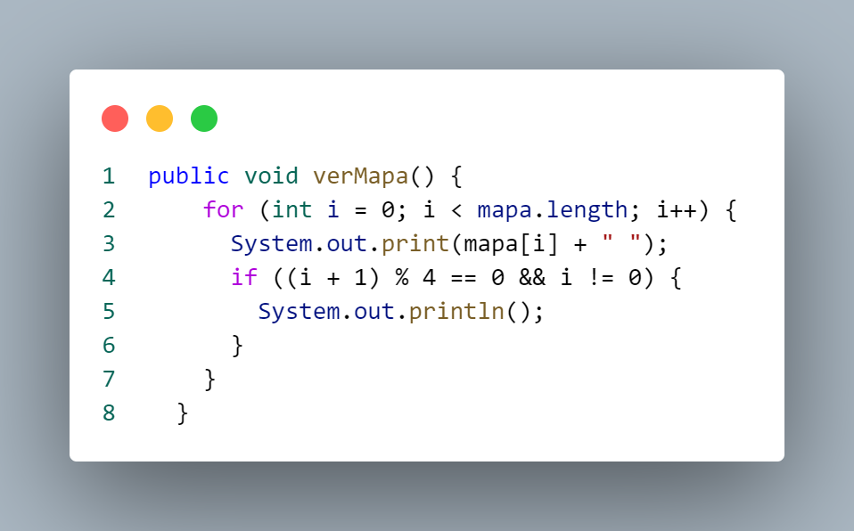
Este método muestra
el contenido del array mapa de
manera que cada valor se imprime
seguido de un espacio. Además,
cada vez que se ha impreso un
bloque de 4 valores, se inserta
un salto de línea para mejorar
la legibilidad de la salida.
Metodo getMapa y getMapaBits
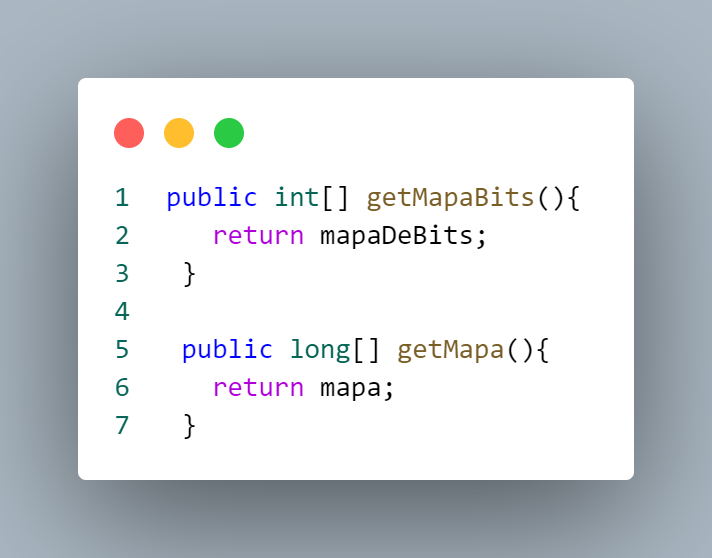
Estos son métodos de
acceso (getters) que proporcionan
acceso a los arrays mapaDeBits y
mapa desde fuera de la clase.
getMapaBits():Devuelve el array
mapaDeBits, que parece ser un mapa
de bits representando el estado de
ocupación de bloques de memoria.
Este método permite a otras partes
del código obtener y utilizar la
información contenida en mapaDeBits.
getMapa():Devuelve el array mapa,
que parece ser una representación
en decimal de la información contenida
en mapaDeBits. Este método proporciona
acceso a la representación decimal que
se ha derivado o convertido a partir
del mapa de bits.
Metodo Covertir Binario a Decimal
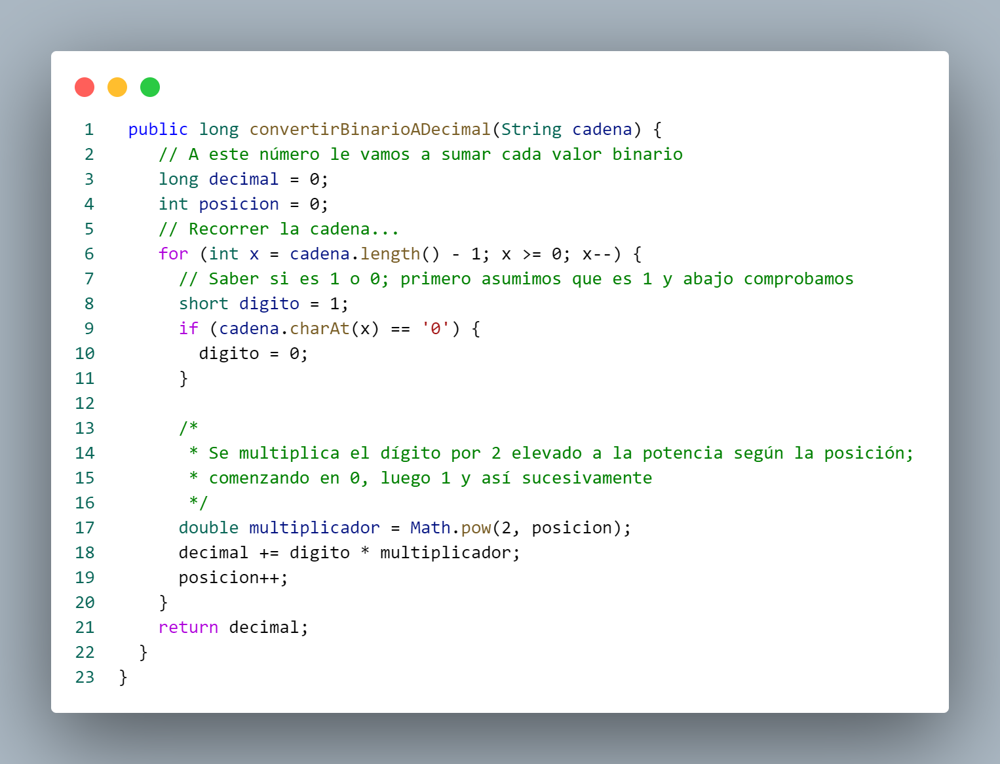
Este método recorre
cada dígito de una cadena binaria
de derecha a izquierda, interpreta
cada dígito como 0 o 1, multiplica
el dígito por 2 elevado a la potencia
correspondiente a su posición en la
cadena, y acumula estos valores para
obtener el equivalente decimal de la
cadena binaria. El resultado final es
el valor decimal equivalente a la
cadena binaria proporcionada como entrada.
MapaBits.java
Clase mapaBits
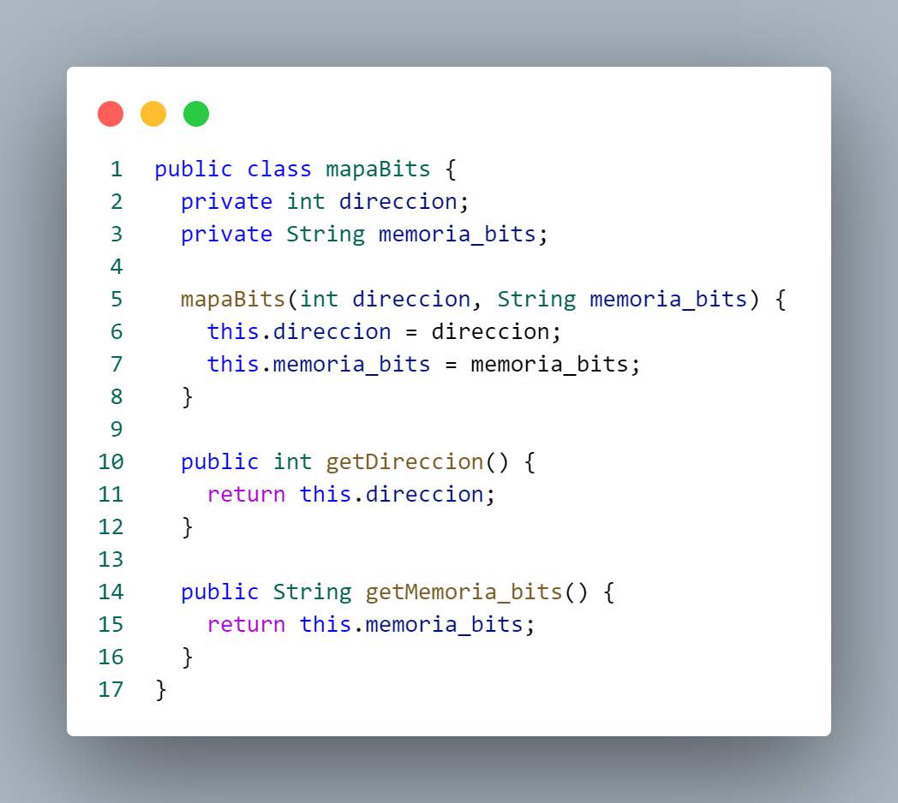
Esta clase encapsula
la información relacionada con un
elemento en un mapa de bits de memoria.
Los atributos almacenan la dirección
y la representación en bits del estado
de la memoria, y los métodos de acceso
permiten obtener esta información desde
fuera de la clase.
MapaDecimal.java
Clase MapaDecimal
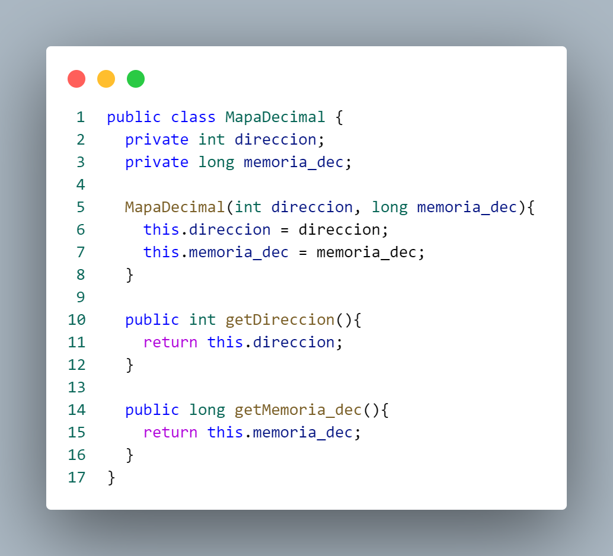
Esta clase encapsula
la información relacionada con un
elemento en un mapa que utiliza
valores decimales para describir el
estado de la memoria. Los atributos
almacenan la dirección y el valor
decimal, y los métodos de acceso
permiten obtener esta información
desde fuera de la clase.
Proceso.java
Clase Proceso
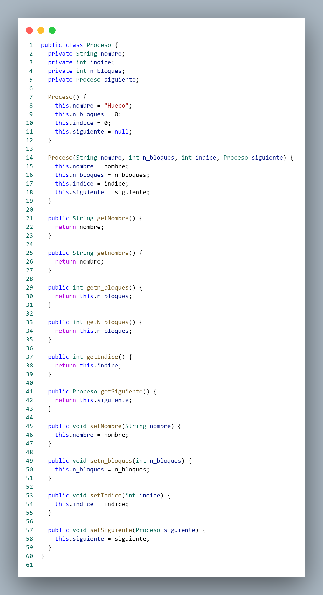
Esta clase encapsula
información sobre un proceso o bloque
de memoria en un sistema. Los métodos
de acceso permiten obtener y modificar
la información contenida en cada instancia
de la clase. La presencia de un constructor
predeterminado y otro con parámetros
sugiere flexibilidad al crear instancias
de la clase con o sin valores específicos.
Atributos:
'nombre': Un atributo que almacena el
nombre del proceso o, por defecto, se
establece como "Hueco".
'indice': Un atributo que almacena el
índice asociado al proceso.
'n_bloques': Un atributo que almacena
el número de bloques asociados al proceso.
'siguiente': Un atributo que almacena una
referencia al siguiente proceso en la lista.
Constructores:
'Proceso()': Un constructor que crea un
objeto Proceso con valores predeterminados,
estableciendo el nombre como "Hueco", el
número de bloques como 0, el índice como 0
y el siguiente como null.
'Proceso(String nombre, int n_bloques, int
indice, Proceso siguiente)': Un constructor
que crea un objeto Proceso con valores
específicos proporcionados como argumentos.
Métodos de Acceso (Getters y Setters):
Métodos get para acceder a los valores de
los atributos (getNombre(), getn_bloques(),
getIndice(), getSiguiente()).
Métodos set para modificar los valores de
los atributos (setNombre(), setn_bloques(),
setIndice(), setSiguiente()).
Procesos.java
Clase Proceso
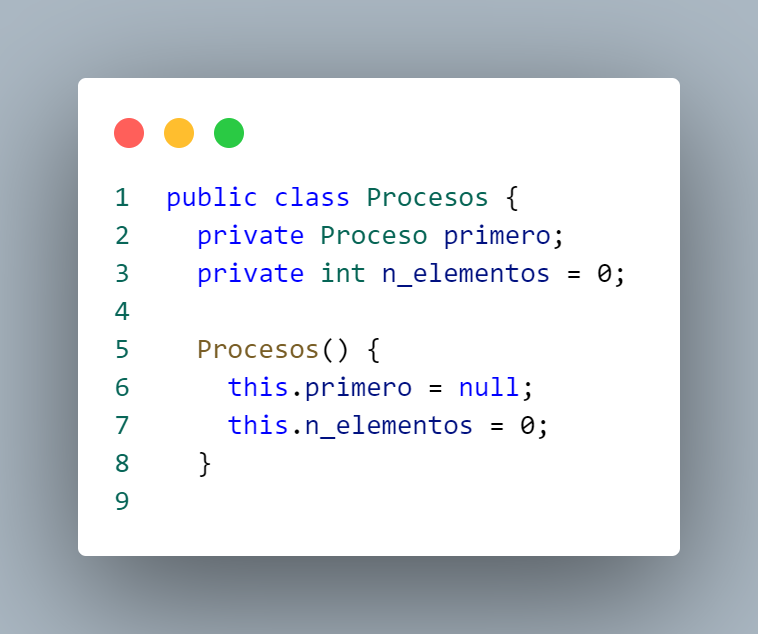
Esta parte del código
establece la estructura inicial de
la clase Procesos y define su estado
cuando se crea una nueva instancia
de la misma. La clase probablemente
incluirá métodos adicionales para
agregar, eliminar y manipular procesos
en la lista, pero esa implementación
específica no se proporciona en el
código proporcionado.
Clase getPrimero
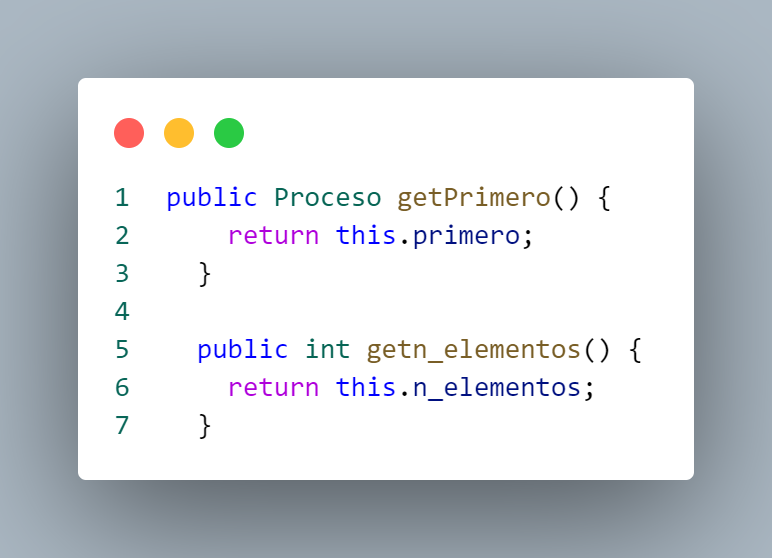
Estos métodos permiten
a otras partes del código obtener
información sobre el estado actual
de la lista de procesos, como acceder
al primer proceso en la lista y conocer
la cantidad de procesos que contiene.
Metodo setPrimero
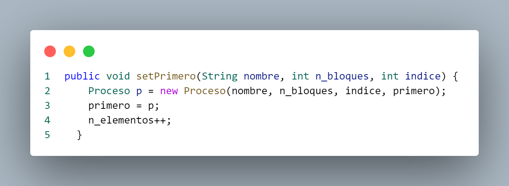
Este método agrega
un nuevo proceso al principio de
la lista de procesos. El nuevo
proceso se crea con la información
proporcionada y su siguiente proceso
en la lista es el proceso que estaba
originalmente en la posición del
primer elemento. Luego, la referencia
al primer proceso se actualiza para
que apunte al nuevo proceso y se
incrementa el contador de elementos
en la lista.
Metodo setFinal
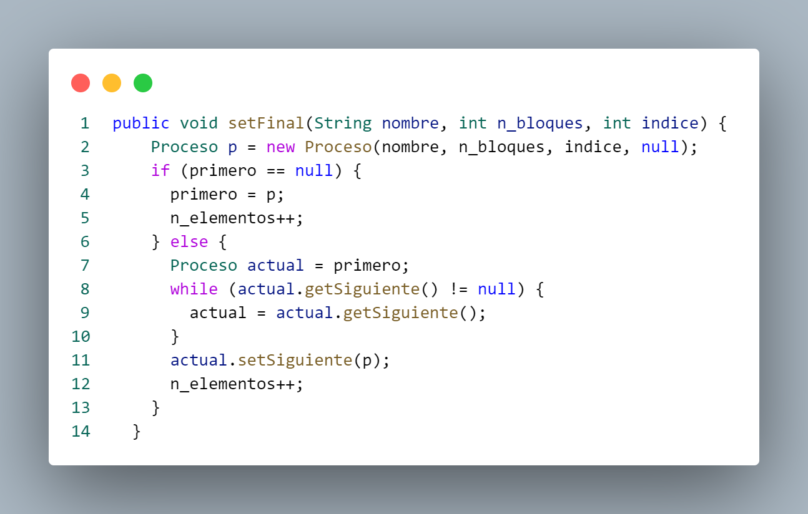
Este método agrega
un nuevo proceso al final de la
lista de procesos. Si la lista
está vacía, el nuevo proceso se
convierte en el primer proceso
en la lista. Si la lista no está
vacía, se itera a través de la
lista hasta llegar al último proceso
y se establece el siguiente proceso
como el nuevo proceso creado. En
ambos casos, se incrementa el contador
de elementos en la lista.
Metodo setIn
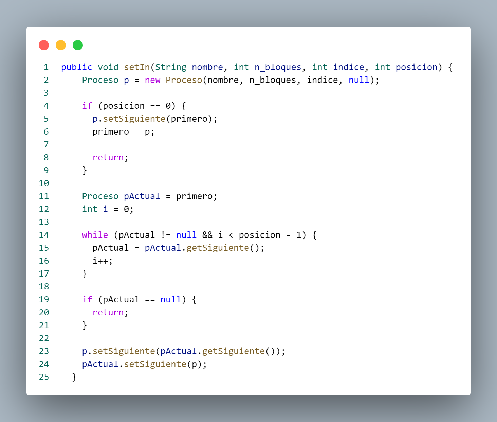
Este método agrega
un nuevo proceso en una posición
específica de la lista de procesos.
Si la posición es 0, se agrega al
principio de la lista. Si la posición
es mayor que 0, se itera a través
de la lista hasta llegar a la posición
deseada y se realiza la inserción.
Este método proporciona flexibilidad
para insertar procesos en diferentes
ubicaciones de la lista.
Borrar Proceso
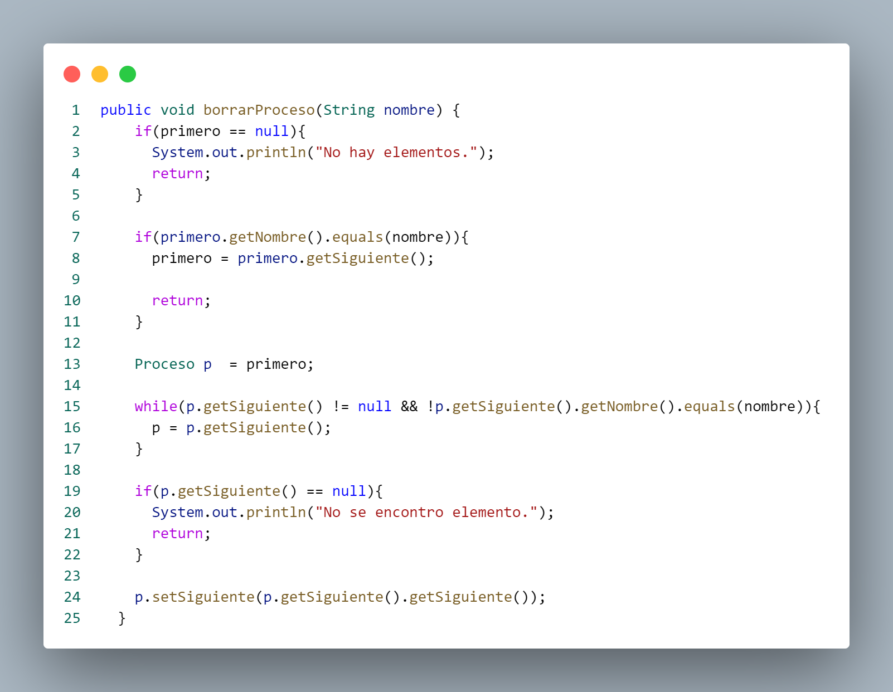
Este método elimina
un proceso de la lista de procesos
según su nombre. Si el proceso a
eliminar está al principio de la
lista, se actualiza la referencia
al primer proceso. Si está en una
posición intermedia o al final, se
ajustan las referencias para "saltar"
el proceso que se desea eliminar.
Borrar Proceso
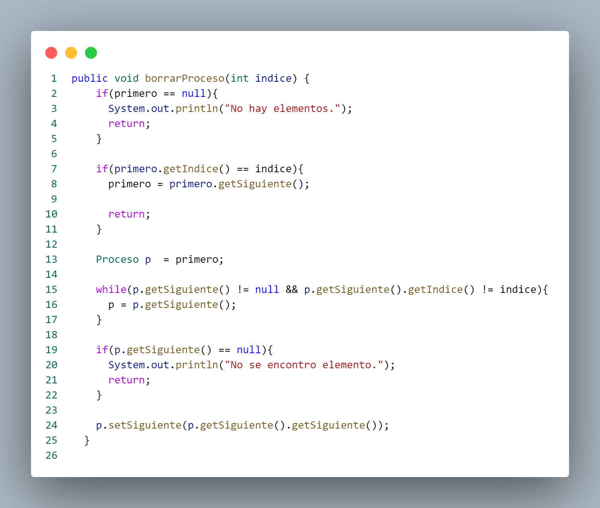
Este método elimina un
proceso de la lista de procesos según
su índice. Si el proceso a eliminar
está al principio de la lista, se
actualiza la referencia al primer
proceso. Si está en una posición
intermedia o al final, se ajustan las
referencias para "saltar" el proceso
que se desea eliminar.
Eliminar Duplicados
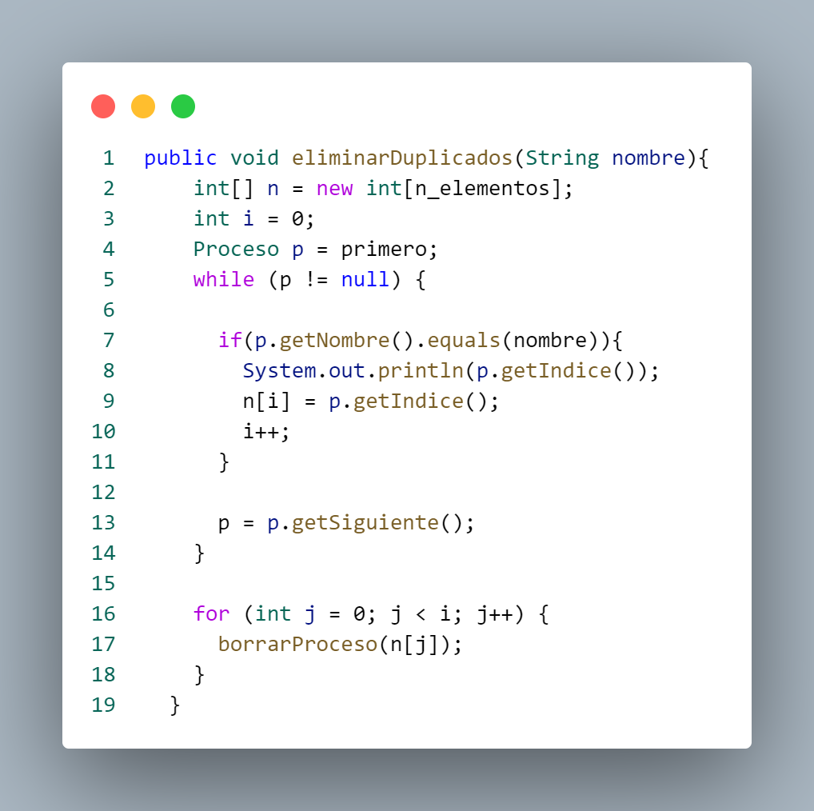
Este método busca procesos
en la lista que tengan un nombre específico,
imprime sus índices y luego los elimina
de la lista. Se utiliza un arreglo para
almacenar temporalmente los índices de los
procesos duplicados antes de eliminarlos.
Metodo Proceso getProceso
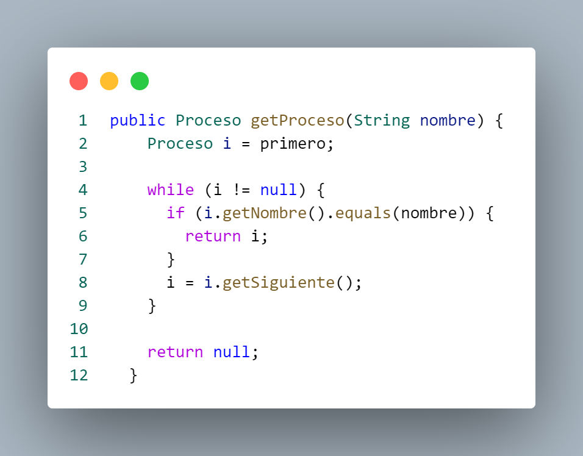
El método getProceso es
una función de la clase Procesos
diseñada para buscar y retornar un
objeto Proceso específico dentro
de la lista en función de su nombre.
El método inicia un iterador desde
el primer proceso en la lista y
recorre la lista en un bucle while.
En cada iteración, verifica si el
nombre del proceso actual coincide
con el nombre proporcionado. Si
encuentra un proceso con el nombre
correspondiente, devuelve el objeto
Proceso actual. En caso contrario,
si se completa la iteración sin
encontrar el proceso buscado, el
método retorna null. En resumen,
este método proporcionauna forma de
acceder a un proceso específico en la
lista basándose en su nombre.
Metodo Proceso getProceso
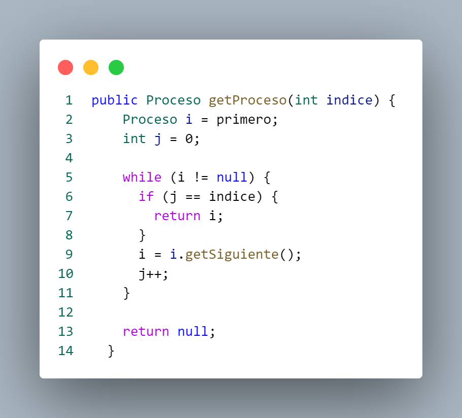
El método getProceso en
la clase Procesos está diseñado para
recuperar un objeto Proceso específico
de la lista según su índice. La función
utiliza un enfoque iterativo, inicializando
un iterador i con el primer proceso en
la lista y un contador j en 0. Luego,
recorre la lista en un bucle while,
incrementando el contador en cada iteración
hasta que coincide con el índice proporcionado.
Cuando encuentra un proceso con el índice
correspondiente, devuelve ese objeto Proceso.
En caso de que no se encuentre un proceso
con el índice buscado, la función retorna null.
Este método proporciona una forma de
acceder a un proceso específico en la
lista según su posición, permitiendo
a los usuarios del código obtener un
objeto Proceso específico basándose
en su índice en la lista vinculada de
procesos.
Metodo verProcesos
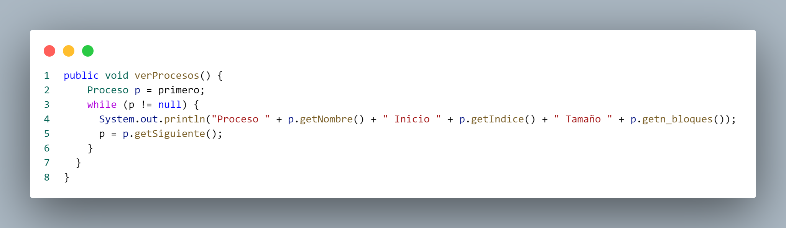
Este método proporciona
una manera de visualizar información
detallada sobre cada proceso en la lista.
La salida generada por este método mostrará
el nombre del proceso, su índice de
inicio y su tamaño en bloques para cada
proceso en la lista enlazada. Este tipo
de método es útil para propósitos de
depuración o para obtener una visión
general de los procesos almacenados en
la lista.
|